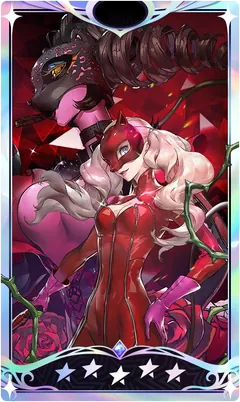

PANTHER Ann Takamaki
Fonte: https://lufel.net/en/character/panther/ · letto il 2026-11-15 con il browser integrato (spoiler attivi) · Stato Global: rilasciata. Convenzione: nomi di skill, awareness, armi, Persona, set e stat lasciati in inglese come su lufel.net; condizioni ed effetti tradotti in italiano. Valori skill = LV10 / LV10+Minds 5 / LV13 / LV13+Minds 5. Valori armi = refinement R0/R1/R2/R3/R4/R5/R6.
Scheda#
| Campo | Valore |
|---|---|
| Nome | Ann Takamaki |
| Codename | PANTHER |
| Persona | Carmen |
| Rarità / tipo | 5★ · Standard (permanente) |
| Elemento | Fire |
| Posizione | Sweeper |
| Ruolo (lufel) | non indicato |
| Tag (lufel) | Attack reduction · Burn · TECHNICAL |
| Resistenza / Debolezza | Res: Fire · Wk: Ice |
Character Review (lufel)#
- Personaggio originale di P5 e DPS Fire AoE che ottiene stack di La Vie en Rose ogni volta che i nemici subiscono danno Fire, usandoli poi per buffarsi.
- Tra i personaggi dell'early game rende piuttosto bene, e il suo danno aumenta contro nemici affetti da Burn, con forte sinergia con gli alleati che applicano Burn.
- La sua arma esclusiva può applicare Burn da sola, rimuovendo questa limitazione quando equipaggiata.
- Dopo l'HIGHLIGHT le sue skill sono potenziate nel turno successivo, quindi usare l'HL prima che inizi il suo turno e poi lanciare la Skill 3 mentre è in La Vie en Rose produce danni molto alti.
Pro - Facile da ottenere in quanto Phantom Thief permanente. - Capace di infliggere un solido danno Fire AoE.
Contro - Non può controllare quando entra nello stato La Vie en Rose.
Recommended Setup (lufel)#
Nota lufel: le impostazioni consigliate sono basate su contenuti futuri; alcune funzioni potrebbero non essere ancora disponibili (Revelation, Mindscape, ecc.).
- Revelation — Space: Acceptance (tooltip "Acceptance - Strife": ogni nemico in campo aumenta il proprio Attack dell'8%, fino al 40%) · Sun/Moon/Star/Sky: Strife (2-Set: Fire damage +10% · 4-Set: Attack +15%; se il nemico è debole al Fire, Attack +15% in più)
- Main Options — Sun: HP · Moon: Attack / Damage Mult · Star: Crit Mult / Crit Rate · Sky: Attack
- Sub Options — 1ª priorità: Crit Rate / Crit Mult · 2ª: Attack / Damage Mult / Pierce Rate · 3ª: "-"
- Recommended Stats — LV10: "-" · LV10+Minds 5: "-" · LV13: "-" · LV13+Minds 5: "-"; Battle Entry +: "-"
- Priorità skill — 1º Skill 3 (MAX) · 2º Skill 1 (MAX) · 3º Highlight (MAX) · 4º Skill 2 (livello 8)
- Mindscape (LV 5) — Rank Strengthening 1: Damage Mult 16% · Rank Strengthening 2: Crit Rate 12% · Skill Enforce 1: Skill1 / HIGHLIGHT · Skill Enforce 2: Skill2 / Skill3
- Skill Rotation — A0: 3 › 1 › 3 › 1 › 3 › 1
- Notes (lufel) — Cambia l'ordine delle attivazioni di La Vie en Rose (lufel: "Lavian Rose") in 1, 3, e così via.
Skills (LV10 / LV10+Minds 5 / LV13 / LV13+Minds 5)#
Skill 1 — Crimson Rose (Fire · SP 20) Infligge danno Fire a tutti i nemici pari al 94.8%/104.5%/100.6%/110.3% dell'Attack e aumenta l'Attack di Ann del 20% per 2 turni. Quando Ann ha La Vie en Rose, per 2 turni riduce l'Attack dei nemici dell'8% dell'Attack di Ann e aumenta il suo Attack della stessa quantità.
Skill 2 — Trifire (Fire · SP 20) Infligge danno Fire a 1 nemico pari al 134.2%/148.0%/142.5%/156.2% dell'Attack, con 75% di probabilità di infliggere Burn. Quando Ann ha La Vie en Rose e gli HP del nemico sono sotto il 50%, infligge danno bonus pari al 30% del danno inflitto con questa skill.
Skill 3 — Falling Sun (Fire · SP 22) Infligge danno Fire a tutti i nemici pari al 96.3%/106.2%/102.3%/112.1% dell'Attack, con 30% di probabilità di infliggere Burn. Quando Ann ha La Vie en Rose, danno inflitto dalle skill +30%.
HIGHLIGHT (cooldown 4 turni) Infligge danno Fire a tutti i nemici pari al 195.2%/215.2%/207.2%/227.2% dell'Attack. Danno delle skill Fire di Ann +78.1%/86.1%/82.9%/90.9% per 1 turno.
Passiva — Rising Tension: attiva un Technical Fire quando usa una skill o l'Highlight. Quando si attiva Fireburn, danno di quella skill o Highlight +30.0%.
Passiva — Carrot and Stick: al termine di La Vie en Rose, ripristina HP all'alleato con meno HP residui pari al 45.0% dell'Attack di Ann.
Awareness#
- A0 — Passion (talento base): infliggendo danno Fire a un nemico con una skill, ottiene 1 Passion; fino a 4 stack di Passion con 1 skill. Se Passion è a 4 o più stack all'azione di Ann, spende tutti gli stack per ottenere La Vie en Rose per 1 turno. La Vie en Rose: Attack di Ann +30%/40%/50% (l'effetto cambia ai livelli 1/50/70). *Non può ottenere La Vie en Rose consecutivamente alla sua azione successiva.
- A1 — Seguidilla: entrando nello stato La Vie en Rose, Attack del party +25% per 1 turno.
- A2 — Marriage of Flames: al termine di La Vie en Rose, attiva 2 attacchi follow-up che infliggono danno Fire pari al 66% dell'Attack di Ann a nemici casuali.
- A3 — Beautiful Sins: aumenta di 3 i livelli di skill di Falling Sun e Thief Tactics.
- A4 — Hearts on Fire: Highlight Enhanced: quando Ann usa un Highlight, Attack +100% per 1 turno.
- A5 — Makeup: aumenta di 3 i livelli di skill di Crimson Rose e Trifire.
- A6 — Time for Punishment: attaccando i nemici con skill Fire, 60% di probabilità di ottenere 1 stack di Passion. Quando La Vie en Rose è attivo, danno Fire +11% per ogni stack di Passion speso (fino al 110%).
Stats#
- Base (LV1): HP 288 · ATK 107 · DEF 55 · Speed 94
- Hidden Ability LV7: ATK % 29%
- LV80 (HP / ATK / DEF): A0 3240 / 1210 / 620 · A1 3298 / 1232 / 631 · A2 3357 / 1253 / 642 · A3 3415 / 1276 / 654 · A4 3474 / 1297 / 665 · A5 3532 / 1319 / 676 · A6 3590 / 1340 / 687
Armi esclusive (valori R0/R1/R2/R3/R4/R5/R6)#
5★ Rosethorn — HP 2141 · ATK 799 · DEF 410 - Aumenta il danno Fire del 24.2%/24.2%/31.5%/31.5%/38.8%/38.8%/46.1%. - Entrando nello stato La Vie En Rose, applica Burn a 1 nemico casuale. - Danno Fire +25.5%/33.5%/33.5%/41.5%/41.5%/49.5%/49.5% per ogni nemico con Burn; massimo 76%/100%/100%/124%/124%/148%/148%.
4★ Masquerade Ribbon — HP 1712 · ATK 640 · DEF 328 - Aumenta l'Attack del 12.0%/16.0%/16.0%/20.0%/20.0%/24.0%/24.0% (sequenza R0-R6 così come mostrata da lufel). - Attaccando un nemico con Burn, Attack +23.7%/23.7%/30.8%/30.8%/37.9%/37.9%/45.0%.
Attribute Mindscape (lufel: introdotto in KR V5.2, forse non ancora su Global)#
- Mindscape Synergy: nessuna consigliata (slot vuoto su lufel).
- Mindscape Combat Skill: nessuna consigliata (slot vuoto su lufel).
Recommended Combination (lufel)#
Nota lufel: alcune Persona e armi consigliate potrebbero non essere ancora uscite nella tua regione. - Wonder Weapons: Purgatory · Starry Compass · Ex Machina - Persona (ATK): Lamia · Baphomet · Koumokuten · Jikokuten - Persona (CRITICAL): Dionysus · Ame-no-Uzume - Persona (REDUCE DEF): Nian · Surt · Vishnu · Norn
Recommended Parties (lufel)#
Nota lufel: la maggior parte degli esempi di party è stata scritta attorno all'uscita KR/CN del personaggio; Thieves o Mindscape Core successivi potrebbero non essere considerati. Solo riferimento. - Lineup — KEY: applica Burn ai nemici e aumenta il danno Fire subito. · HOWLER: applica una riduzione DEF AoE, infligge Burn e aumenta il danno Fire subito dai nemici. · MATOI: applica una riduzione DEF AoE e aumenta il danno Fire subito dai nemici con Burn. - Party d'esempio — PANTHER / KEY / LEON / OKYANN · PANTHER / MARIAN / LEON / OKYANN · PANTHER / HOWLER / CHORD / PHOEBE · PANTHER / MATOI / CHORD / ORACLE
Nomenclatura#
- lufel: "Ann Takamaki" (codename PANTHER; la versione alternativa è PANTHER·Starlight, guida separata), slug URL
panther. Stati/risorse: Passion, La Vie en Rose (nelle note "Lavian Rose"), Fireburn (Technical Fire). - Nelle descrizioni lufel "Signature Weapon" = arma esclusiva.